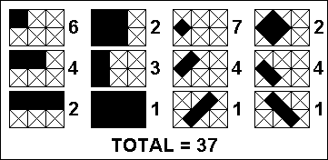
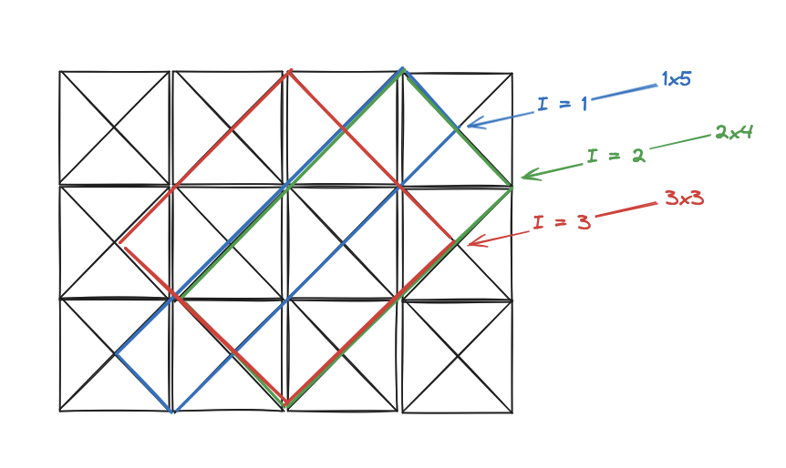
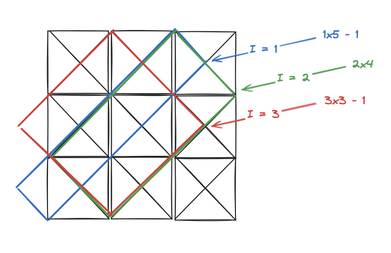

In this post we'll look at a dynamic programming solution to the problem "Rectangles in Cross-hatched Grids" on Project Euler. This problem requires us to determine how many rectangles fit into a grid of a particular shape:
In a 3x2 cross-hatched grid, a total of 37 different rectangles could be situated within that grid as indicated in the sketch.

There are 5 grids smaller than 3x2, vertical and horizontal dimensions being important, i.e. 1x1, 2x1, 3x1, 1x2 and 2x2. If each of them is cross-hatched, the following number of different rectangles could be situated within those smaller grids:
1x1: 1 2x1: 4 3x1: 8 1x2: 4 2x2: 18 Adding those to the 37 of the 3x2 grid, a total of 72 different rectangles could be situated within 3x2 and smaller grids.
How many different rectangles could be situated within 47x43 and smaller grids?
We approach this problem as a dynamic programming problem where we consider the number of rectangles in an X by Y grid to be the number of rectangles in an X-1 by Y grid plus the amount of rectangles that an additional column adds. We make some simplifications as well by assuming that X >= Y (that is, the width of the grid is always at least as big as the height). We can do this without loss of generality since the amount of rectangles in an X by Y grid is the same as in a Y by X grid (to convince yourself of this, rotate a grid 90 degrees and note that it's the same grid). We also note that exactly one rectangle fits into a 1 x 1 grid. So far we have this outline then.
def rectangles(width: int, height: int) -> int:
if width == 1 and height == 1:
return 1
if width < height:
return rectangles(height, width)
# compute rectangles only possible with additional width
new_rectangles = 0
# TODO
return new_rectangles + rectangles(width-1, height)
We can now focus on how many new rectangles can be created when we add a new column to the grid. Clearly these rectangles must have at least one square in the new column (or partially in, in the case of diagonal rectangles). We can further break down these new rectangles into two cases -
We start with the first case, which is a bit simpler. We start by looking at how we can fill the new column with rectangles that only fit into the new column. If the new column has height Y, then we can clearly fit Y 1x1 rectangles into the new column. Similarly, we can fit Y-1 1x2 rectangles into the new column and continue this pattern until we end with 1 1xY rectangle. This means there are exactly 1 + 2 + ... + Y rectangles that fit into the new column. Note that each one of those rectangles can also be extended along the X axis to make new rectangles. This means the total number of rectangles parallel to the sides of the grid's broders is (1 + 2 + ... + Y) * X.
# 1 x height
new_rectangles = sum(range(1, height+1))
# width x height
new_rectangles *= width
The diagonal case is a bit more complicated. We start by building diagonal rectangles with their rightmost vertex in the new column. This means that the vertex is either on the rightmost border of the grid, or is inside the new column (since diagonal rectangles can have a vertex in the middle of a column square). We note that there are Y * 2 - 1 vertices from which we can build these rectangles. Starting from the top of the column and working our way down we can number these 1, 2, ... Y * 2 - 1. The Yth (middle) vertex builds a square while the rest build rectangles that are not squares. There is also a symmetry property for these rectangles, the first rectangle mirrors (is the same size in a different orientation) as the last rectangle, the second rectangle mirrors the second-to-last rectangle, etc. This means we only need to calculate the areas of the first Y diagonal rectangles with a vertex in the new column.
A rule for the amount of diagonal rectangles can be ascertained by inspection. If we have a diagonal rectangle with rightmost vertex I then we observe that the maximum distance that we can draw from that vertex, extending up and to the left, is I as well. For the other dimension, down and to the left, we observe that the maximum distance the vertex can be extended is Y * 2 - I. Thus there are (Y * 2 - I) * I rectangles that can be constructed with leftmost vertex I.

Note that we can always extend this far when X > Y. There is a special case though when X = Y, which is that the leftmost square of the full rectangle (i.e. the rectangle with max width and height) with a rightmost vertex inside the column (not on the right edge of the grid) will be cut off. The indexes where this occurs are the odd ones, as we start with I = 1 being inside the column and then alternate with every other index being inside the column. That means, for the special case of X = Y and I is odd we must remove one rectangle since the full rectangle for that vertex is not possible.

The final consideration is that, for I < Y we need to double the count of those rectangles, since they are symmetrical with the rectangles for I > Y. I = Y does not need to be doubles as it is a square and only occurs once. This gives us enough rules to calculate the number of new diagonal squares possible when adding a new column.
for i in range(1, height+1):
y = i
x = height * 2 - y
area = x * y - (0 if width > height else (y % 2))
new_rectangles += area if x == y else area * 2
This is all we need in order to solve the problem. Note that the problem asks us to sum all the rectangles
for all grids that have dimension AxB where 1 <= A <= X and 1 <= B <= Y. We can employ functools.cache
to memoize the calls and deduplicate calls with the same width and height parameters. Putting it all together we
arrive at the following solution -
from functools import cache
from sys import argv
@cache
def rectangles(width: int, height: int) -> int:
if width == 1 and height == 1:
return 1
# normalize so that width is always >= height
if width < height:
return rectangles(height, width)
# compute rectangles only possible with additional width
# 1 x height
new_rectangles = sum(range(1, height+1))
# width x height
new_rectangles *= width
# (w) x (l) cross hatched
for i in range(1, height+1):
y = i
x = height * 2 - y
area = x * y - (0 if width > height else (y % 2))
new_rectangles += area if x == y else area * 2
return new_rectangles + rectangles(width-1, height)
X = int(argv[1])
Y = int(argv[2])
total = 0
for x in range(1, X+1):
for y in range(1, Y+1):
total += rectangles(x, y)
print(total)
$ python euler147.py 3 2
72